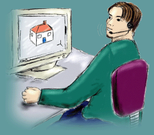
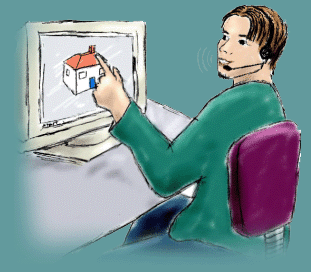

Introduction
As the use of information technology becomes more and more pervasive in people's everyday life, the need for effective human computer interfaces becomes ever greater. In many cases it will be the usability of a service which is more important than the number of technical features offered. Current computer interfaces are counter-intuitive and require too much learning. Although it is true that humans can adapt remarkably well in some cases, e.g. seven-year olds who can surf the net with ease while their parents are unsure how to operate a mouse, the proliferation of different computer systems in all aspects of life demands that interfaces become easier to use.
Fig 1. Two generations of computer user.
For many years now, the standard approach to screen-based interfaces has been 'WIMP' (Windows, Icons, Mouse, Pointing), while for non-screen interfaces such as touchtone on the telephone, the remote control, the digital watch, etc, the approach has simply been button-pushing. In both cases, designers have attempted to capture the essentials of good interface design, such as the appearance of screens and the sequences of button pushes, in design guidelines. However, all these interfaces often suffer from two fundamental problems:
1) they are not rich and powerful enough, and therefore limit the user's expression of what he wants the system to do (assuming a degree of complexity in the task),
2) they are difficult and counter-intuitive to use, e.g. the classic example of the video recorder.
For some years now, work has been going on in research laboratories on natural spoken language interfaces to computer systems. Initially, speech interfaces used small vocabularies of isolated words, e.g. as an extension of telephony interactive voice response (IVR) systems using touchtones. In recent years, the vocabularies have grown to several thousand words, continuous speech is recognised, and the systems are beginning to cope with genuine natural language and engage in a natural dialogue with the user [1, 2, 3, 4]. Some early systems of this type have now moved out of the laboratory into the market-place (Nuance Customers Web Page [5]), although recognition accuracy is still a problem in applications which are less well-constrained. The appeal of spoken language interfaces is that they address both of the fundamental problems of traditional computer interfaces. Natural language is an extremely rich and powerful interface, and is the usual way we express our requirements. Natural language is also easy and intuitive to use.

Fig 2. Spoken Language Interfaces are easy to use
However, there is still a problem, besides recognition accuracy. If we simply replace a WIMP interface with a speech interface, the interface remains unimodal, i.e. there is only one channel of communication. Human-human communication is much richer, using many channels or modalities, such as speech, facial expression, gestures, other body language, etc. Restricting the computer interface to one modality loses much of that power. We believe that multimodality is the way forward, integrating different input and output modalities such as speech, touch, gesture, sound, text, and perhaps even mouse-clicks!

Fig 3. A Multimodal spoken language interface
There are three other reasons for preferring a multimodal interface to a speech-only one.
- Firstly, computer interfaces are different from human-human communication. A computer is able to respond perfectly to very precise and complex logical or numerical inputs, which means that speech alone, with its imprecision and ambiguity, may not always be the best modality of communication, in comparison to other traditional computer modalities which have evolved over the years that computers have been in existence (e.g. spreadsheets).
- Secondly, the technologies of speech recognition and natural language understanding are still error-prone and limited in coverage, and the use of other modalities should help to compensate for this.
- Thirdly, there has recently been a very rapid rise in multimedia services, largely fuelled by the rise of the World Wide Web (WWW), and multimedia is a fast growing sector for major telcos such as BT. With so much multimedia in the interface, it would be perverse to restrict the communication to speech-in, speech-out.
The challenge we faced was to understand more about the characteristics of multimodal human-computer interaction, how the different input and output modalities could be effectively integrated to bring real synergy instead of confusion, and then to actually build a working multimodal system, which would involve many integration issues as well as the design of new components.
Fig 4. Can we achieve real synergy?
For the interested reader, we provide further background information on multimodal interaction: a comparison of modality with medium, human-human multimodal communication, previous research on multimodal interaction with computer systems. We also provide an in-depth discussion of different approaches to multimodal integration.
© Copyright British Telecommunications plc 1999